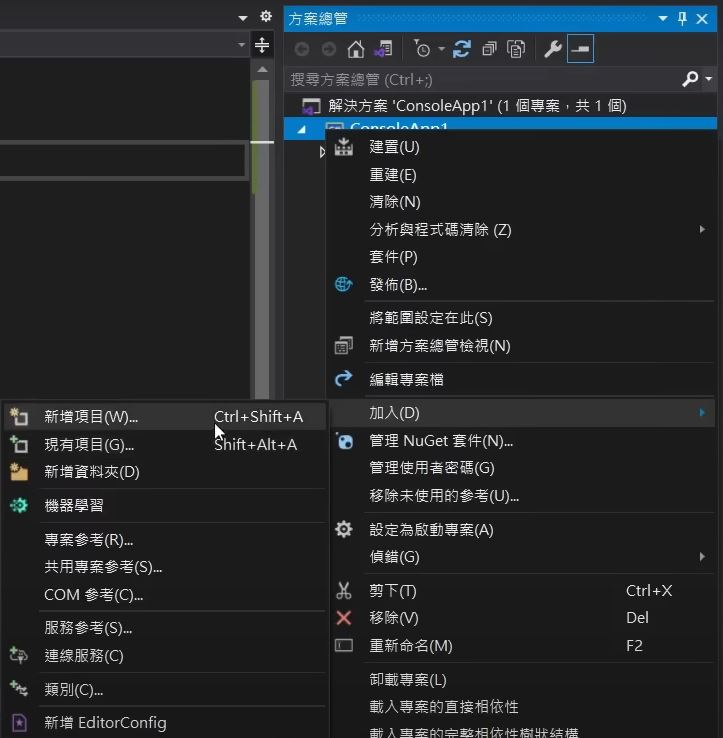

System.Console.WriteLine("HELLO C#");
Data Type & Var
- string : 字串 "string"
- char : 字元'char'
- int : 整數 123
- double : 浮點數 123.456
- bool : 布林值 true/false
使用變數: 資料型態 變數名稱 = 值;
string name = "Dory"; char gender = 'F'; int age = 20; double height = 165.5; bool ishumam = false;
字串的常見用法
| /n | 換行 |
| / | 跳脫字元 ex./" |
| + | 連接字串/變數 ex "Apple" + "Banana" |
| .length | 計算字串長度 ex "string".length |
| .ToUpper()/ToLower() | 字串轉大寫/小 ex "string".ToUpper() |
| .Contains("s") | 判斷字串是否包含某字串，回傳bool ex "string"..Contains("s") //回傳true |
| string[] | 回傳字串內第幾位的字 ex. string[1] //回傳t |
| .IndexOf() | 尋找值在字串內的位置，若有重複則是最先找到的，若查找字串回傳為開頭位置 ex.string.IndexOf('t') //回傳1 |
| .Substring() | 切割字串 ex.string.Substring(2) //回傳ring ex.string.Substring(2,2) //回傳ri (從第2位開始，取2個) |
數字的常見用法
- 整數與整數做運算只會回傳整數 ex. 5/2 = 2
- 有四則運算規則
-
System.Math.Abs() 絕對值 System.Math.Pow() 次方 ex. System.Math.Pow(2,3) 2的三次方 //8 System.Math.Sqrt() 開根號 System.Math.Max()/System.Math.Min() 比大小 ex.System.Math.Max(1,20) //20 System.Math.Round() 四捨五入
基礎語法
- System.Console.WriteLine(); : 印出一行內容
- System.Console.Write(); : 印出內容(不換行)
- System.Console.ReadLine(); : 取得用戶輸入
- System.Convert.ToInt32(); : 轉為Int
- System.Convert.ToDouble(); : 轉為浮點數
Array
- 一維陣列 : 資料型態[] 陣列名稱 = { val1,val2 }
- 創建空的一維陣列 : 資料型態[,] 陣列名稱 = new 資料型態[一維陣列內有幾個值]
- 一維陣列呼叫 : 陣列名稱[key]
- 二維陣列 : 資料型態[,] 陣列名稱 = { { val1,val2 },{ val3,val4 } }
- 創建空的二維陣列 : 資料型態[,] 陣列名稱 = new 資料型態[幾個一維陣列,一維陣列內有幾個值]
- 二維陣列呼叫 : 陣列名稱[key1,key2]
class & object
- 創建class 在專案上右鍵>加入>新增項目>(顯示範例)>選擇類別>輸入名稱(命名通常第一字大寫) 
- 類別的內容
- 創建實體物件
- 其他
class Car
{
public string color;
public int level;
}
Car toyota = new Car(); toyota.color = "black"; toyota.level = 2;
- namespace : 命名空間 ， 一個裡面可以放類別、命名空間...的空間
使用該空間的東西 1.在程式開頭 using spacename 2.spacename.classname ; - Method :
public void SayHi() { Console.WriteLine("HI" + name); }void可以是int / bool ，視回傳的資料型態而定 ; ()內可放變數 ex.(int num1, int num2)
- constructor : 創建實體時一起建構 / 執行
public SayHi() { Console.WriteLine("創建成功"); } -
Getter & Setter : 當類別內屬性是private，在外部想取得/設定該屬性˙
class D { private string type; public Constructor() { Type = type; } public string Type { get { return type; } set { type = value; } } }可用於限制type屬性設定的內容
- static attribute 靜態屬性 : 屬於class的，取的該屬性 (1.Classname.att / 2.寫個方法回傳)
- static class/method : 不需要創建實體即可使用
- inheritance 繼承 : 把其他class的東西 讓自己也有，減少重複的程式碼
class ElectricCar : Car{}
Main Method
C#的Main method是程式開始執行的進入點
class Program
{
static void Main()
{
}
}